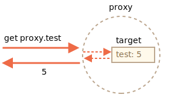

一个 Proxy 对象包装另一个对象并拦截诸如读取/写入属性和其他操作，可以选择自行处理它们，或者透明地允许该对象处理它们。
Proxy 被用于了许多库和某些浏览器框架。在本文中，我们将看到许多实际应用。
语法：
let proxy = new Proxy(target, handler)target —— 是要包装的对象，可以是任何东西，包括函数。handler —— 代理配置：带有“捕捉器”（"traps"，即拦截操作的方法）的对象。比如 get 捕捉器用于读取 target 的属性，set 捕捉器用于写入 target 的属性，等等。对 proxy 进行操作，如果在 handler 中存在相应的捕捉器，则它将运行，并且 Proxy 有机会对其进行处理，否则将直接对 target 进行处理。
首先，让我们创建一个没有任何捕捉器的代理（Proxy）：
let target = {};
let proxy = new Proxy(target, {}); // 空的 handler 对象
proxy.test = 5; // 写入 proxy 对象 (1)
alert(target.test); // 5，test 属性出现在了 target 中！
alert(proxy.test); // 5，我们也可以从 proxy 对象读取它 (2)
for(let key in proxy) alert(key); // test，迭代也正常工作 (3)由于没有捕捉器，所有对 proxy 的操作都直接转发给了 target。
proxy.test= 会将值写入 target。proxy.test 会从 target 返回对应的值。proxy 会从 target 返回对应的值。我们可以看到，没有任何捕捉器，proxy 是一个 target 的透明包装器（wrapper）。

Proxy 是一种特殊的“奇异对象（exotic object）”。它没有自己的属性。如果 handler 为空，则透明地将操作转发给 target。
要激活更多功能，让我们添加捕捉器。
我们可以用它们拦截什么？
对于对象的大多数操作，JavaScript 规范中有一个所谓的“内部方法”，它描述了最底层的工作方式。例如 [[Get]]，用于读取属性的内部方法，[[Set]]，用于写入属性的内部方法，等等。这些方法仅在规范中使用，我们不能直接通过方法名调用它们。
Proxy 捕捉器会拦截这些方法的调用。它们在 proxy 规范 和下表中被列出。
对于每个内部方法，此表中都有一个捕捉器：可用于添加到 new Proxy 的 handler 参数中以拦截操作的方法名称：
| 内部方法 | Handler 方法 | 何时触发 |
|---|---|---|
[[Get]] |
get |
读取属性 |
[[Set]] |
set |
写入属性 |
[[HasProperty]] |
has |
in 操作符 |
[[Delete]] |
deleteProperty |
delete 操作符 |
[[Call]] |
apply |
函数调用 |
[[Construct]] |
construct |
new 操作符 |
[[GetPrototypeOf]] |
getPrototypeOf |
Object.getPrototypeOf |
[[SetPrototypeOf]] |
setPrototypeOf |
Object.setPrototypeOf |
[[IsExtensible]] |
isExtensible |
Object.isExtensible |
[[PreventExtensions]] |
preventExtensions |
Object.preventExtensions |
[[DefineOwnProperty]] |
defineProperty |
Object.defineProperty, Object.defineProperties |
[[GetOwnProperty]] |
getOwnPropertyDescriptor |
Object.getOwnPropertyDescriptor, for..in, Object.keys/values/entries |
[[OwnPropertyKeys]] |
ownKeys |
Object.getOwnPropertyNames, Object.getOwnPropertySymbols, for..in, Object/keys/values/entries |
JavaScript 强制执行某些不变量 — 内部方法和捕捉器必须满足的条件。
其中大多数用于返回值：
- `[[Set]]` 如果值已成功写入，则必须返回 `true`，否则返回 `false`。
- `[[Delete]]` 如果已成功删除该值，则必须返回 `true`，否则返回 `false`。
- ……依此类推，我们将在下面的示例中看到更多内容。
还有其他一些不变量，例如：
- 应用于代理（proxy）对象的 `[[GetPrototypeOf]]`，必须返回与应用于被代理对象的 `[[GetPrototypeOf]]` 相同的值。换句话说，读取代理对象的原型必须始终返回被代理对象的原型。
捕捉器可以拦截这些操作，但是必须遵循下面这些规则。
不变量确保语言功能的正确和一致的行为。完整的不变量列表在 [规范](https://tc39.es/ecma262/#sec-proxy-object-internal-methods-and-internal-slots) 中。如果你不做奇怪的事情，你可能就不会违反它们。让我们来看看它们是如何在实际示例中工作的。
最常见的捕捉器是用于读取/写入的属性。
要拦截读取操作，handler 应该有 get(target, property, receiver) 方法。
读取属性时触发该方法，参数如下：
target —— 是目标对象，该对象被作为第一个参数传递给 new Proxy，property —— 目标属性名，receiver —— 如果目标属性是一个 getter 访问器属性，则 receiver 就是本次读取属性所在的 this 对象。通常，这就是 proxy 对象本身（或者，如果我们从 proxy 继承，则是从该 proxy 继承的对象）。现在我们不需要此参数，因此稍后我们将对其进行详细介绍。让我们用 get 来实现一个对象的默认值。
我们将创建一个对不存在的数组项返回 0 的数组。
通常，当人们尝试获取不存在的数组项时，他们会得到 undefined，但是我们在这将常规数组包装到代理（proxy）中，以捕获读取操作，并在没有要读取的属性的时返回 0：
let numbers = [0, 1, 2];
numbers = new Proxy(numbers, {
get(target, prop) {
if (prop in target) {
return target[prop];
} else {
return 0; // 默认值
}
}
});
*!*
alert( numbers[1] ); // 1
alert( numbers[123] ); // 0（没有这个数组项）
*/!*正如我们所看到的，使用 get 捕捉器很容易实现。
我们可以用 Proxy 来实现“默认”值的任何逻辑。
想象一下，我们有一本词典，上面有短语及其翻译：
let dictionary = {
'Hello': 'Hola',
'Bye': 'Adiós'
};
alert( dictionary['Hello'] ); // Hola
alert( dictionary['Welcome'] ); // undefined现在，如果没有我们要读取的短语，那么从 dictionary 读取它将返回 undefined。但实际上，返回一个未翻译的短语通常比 undefined 要好。因此，让我们在这种情况下返回一个未翻译的短语来替代 undefined。
为此，我们将把 dictionary 包装进一个拦截读取操作的代理：
let dictionary = {
'Hello': 'Hola',
'Bye': 'Adiós'
};
dictionary = new Proxy(dictionary, {
*!*
get(target, phrase) { // 拦截读取属性操作
*/!*
if (phrase in target) { //如果词典中有该短语
return target[phrase]; // 返回其翻译
} else {
// 否则返回未翻译的短语
return phrase;
}
}
});
// 在词典中查找任意短语！
// 最坏的情况也只是它们没有被翻译。
alert( dictionary['Hello'] ); // Hola
*!*
alert( dictionary['Welcome to Proxy']); // Welcome to Proxy（没有被翻译）
*/!*请注意代理如何覆盖变量：
```js
dictionary = new Proxy(dictionary, ...);
```
代理应该在所有地方都完全替代目标对象。目标对象被代理后，任何人都不应该再引用目标对象。否则很容易搞砸。假设我们想要一个专门用于数字的数组。如果添加了其他类型的值，则应该抛出一个错误。
当写入属性时 set 捕捉器被触发。
set(target, property, value, receiver)：
target —— 是目标对象，该对象被作为第一个参数传递给 new Proxy，property —— 目标属性名称，value —— 目标属性的值，receiver —— 与 get 捕捉器类似，仅与 setter 访问器属性相关。如果写入操作（setting）成功，set 捕捉器应该返回 true，否则返回 false（触发 TypeError）。
让我们用它来验证新值：
let numbers = [];
numbers = new Proxy(numbers, { // (*)
*!*
set(target, prop, val) { // 拦截写入属性操作
*/!*
if (typeof val == 'number') {
target[prop] = val;
return true;
} else {
return false;
}
}
});
numbers.push(1); // 添加成功
numbers.push(2); // 添加成功
alert("Length is: " + numbers.length); // 2
*!*
numbers.push("test"); // TypeError（proxy 的 'set' 返回 false）
*/!*
alert("This line is never reached (error in the line above)");请注意：数组的内建方法依然有效！值被使用 push 方法添加到数组。当值被添加到数组后，数组的 length 属性会自动增加。我们的代理对象 proxy 不会破坏任何东西。
我们不必重写诸如 push 和 unshift 等添加元素的数组方法，就可以在其中添加检查，因为在内部它们使用代理所拦截的 [[Set]] 操作。
因此，代码简洁明了。
```warn header="别忘了返回 true"
如上所述，要保持不变量。
对于 set 操作，它必须在成功写入时返回 true。
如果我们忘记这样做，或返回任何假（falsy）值，则该操作将触发 TypeError。
## 使用 "ownKeys" 和 "getOwnPropertyDescriptor" 进行迭代
`Object.keys`，`for..in` 循环和大多数其他遍历对象属性的方法都使用内部方法 `[[OwnPropertyKeys]]`（由 `ownKeys` 捕捉器拦截) 来获取属性列表。
这些方法在细节上有所不同：
- `Object.getOwnPropertyNames(obj)` 返回非 Symbol 键。
- `Object.getOwnPropertySymbols(obj)` 返回 Symbol 键。
- `Object.keys/values()` 返回带有 `enumerable` 标志的非 Symbol 键/值（属性标志在 <info:property-descriptors> 一章有详细讲解)。
- `for..in` 循环遍历所有带有 `enumerable` 标志的非 Symbol 键，以及原型对象的键。
……但是所有这些都从该列表开始。
在下面这个示例中，我们使用 `ownKeys` 捕捉器拦截 `for..in` 对 `user` 的遍历，并使用 `Object.keys` 和 `Object.values` 来跳过以下划线 `_` 开头的属性：
```js run
let user = {
name: "John",
age: 30,
_password: "***"
};
user = new Proxy(user, {
*!*
ownKeys(target) {
*/!*
return Object.keys(target).filter(key => !key.startsWith('_'));
}
});
// "ownKeys" 过滤掉了 _password
for(let key in user) alert(key); // name，然后是 age
// 对这些方法的效果相同：
alert( Object.keys(user) ); // name,age
alert( Object.values(user) ); // John,30到目前为止，它仍然有效。
尽管如此，但如果我们返回对象中不存在的键，Object.keys 并不会列出这些键：
let user = { };
user = new Proxy(user, {
*!*
ownKeys(target) {
*/!*
return ['a', 'b', 'c'];
}
});
alert( Object.keys(user) ); // <empty>为什么？原因很简单：Object.keys 仅返回带有 enumerable 标志的属性。为了检查它，该方法会对每个属性调用内部方法 [[GetOwnProperty]] 来获取 它的描述符（descriptor）。在这里，由于没有属性，其描述符为空，没有 enumerable 标志，因此它被略过。
为了让 Object.keys 返回一个属性，我们要么需要它要么存在于带有 enumerable 标志的对象，要么我们可以拦截对 [[GetOwnProperty]] 的调用（捕捉器 getOwnPropertyDescriptor 可以做到这一点)，并返回带有 enumerable: true 的描述符。
这是关于此的一个例子：
let user = { };
user = new Proxy(user, {
ownKeys(target) { // 一旦要获取属性列表就会被调用
return ['a', 'b', 'c'];
},
getOwnPropertyDescriptor(target, prop) { // 被每个属性调用
return {
enumerable: true,
configurable: true
/* ...其他标志，可能是 "value:..." */
};
}
});
alert( Object.keys(user) ); // a, b, c让我们再次注意：如果该属性在对象中不存在，那么我们只需要拦截 [[GetOwnProperty]]。
有一个普遍的约定，即以下划线 _ 开头的属性和方法是内部的。不应从对象外部访问它们。
从技术上讲，我们也是能访问到这样的属性的：
let user = {
name: "John",
_password: "secret"
};
alert(user._password); // secret让我们使用代理来防止对以 _ 开头的属性的任何访问。
我们将需要以下捕捉器：
get 读取此类属性时抛出错误，set 写入属性时抛出错误，deleteProperty 删除属性时抛出错误，ownKeys 在使用 for..in 和像 Object.keys 这样的的方法时排除以 _ 开头的属性。代码如下：
let user = {
name: "John",
_password: "***"
};
user = new Proxy(user, {
*!*
get(target, prop) {
*/!*
if (prop.startsWith('_')) {
throw new Error("Access denied");
}
let value = target[prop];
return (typeof value === 'function') ? value.bind(target) : value; // (*)
},
*!*
set(target, prop, val) { // 拦截属性写入
*/!*
if (prop.startsWith('_')) {
throw new Error("Access denied");
} else {
target[prop] = val;
return true;
}
},
*!*
deleteProperty(target, prop) { // 拦截属性删除
*/!*
if (prop.startsWith('_')) {
throw new Error("Access denied");
} else {
delete target[prop];
return true;
}
},
*!*
ownKeys(target) { // 拦截读取属性列表
*/!*
return Object.keys(target).filter(key => !key.startsWith('_'));
}
});
// "get" 不允许读取 _password
try {
alert(user._password); // Error: Access denied
} catch(e) { alert(e.message); }
// "set" 不允许写入 _password
try {
user._password = "test"; // Error: Access denied
} catch(e) { alert(e.message); }
// "deleteProperty" 不允许删除 _password
try {
delete user._password; // Error: Access denied
} catch(e) { alert(e.message); }
// "ownKeys" 将 _password 过滤出去
for(let key in user) alert(key); // name请注意在 (*) 行中 get 捕捉器的重要细节：
get(target, prop) {
// ...
let value = target[prop];
*!*
return (typeof value === 'function') ? value.bind(target) : value; // (*)
*/!*
}为什么我们需要一个函数去调用 value.bind(target)？
原因是对象方法（例如 user.checkPassword()）必须能够访问 _password：
user = {
// ...
checkPassword(value) {
//对象方法必须能读取 _password
return value === this._password;
}
}对 user.checkPassword() 的调用会调用被代理的对象 user 作为 this（点符号之前的对象会成为 this），因此，当它尝试访问 this._password 时，get 捕捉器将激活（在任何属性读取时，它都会被触发）并抛出错误。
因此，我们在 (*) 行中将对象方法的上下文绑定到原始对象 target。然后，它们将来的调用将使用 target 作为 this，不会触发任何捕捉器。
该解决方案通常可行，但并不理想，因为一个方法可能会将未被代理的对象传递到其他地方，然后我们就会陷入困境：原始对象在哪里，被代理的对象在哪里？
此外，一个对象可能会被代理多次（多个代理可能会对该对象添加不同的“调整”），并且如果我们将未包装的对象传递给方法，则可能会产生意想不到的后果。
因此，在任何地方都不应使用这种代理。
现代 JavaScript 引擎原生支持 class 中的私有属性，这些私有属性以 `#` 为前缀。它们在 <info:private-protected-properties-methods> 一章中有详细描述。无需代理（proxy）。
但是，此类属性有其自身的问题。特别是，它们是不可继承的。让我们来看更多示例。
我们有一个 range 对象：
let range = {
start: 1,
end: 10
};我们想使用 in 操作符来检查一个数字是否在 range 范围内。
has 捕捉器会拦截 in 调用。
has(target, property)
target —— 是目标对象，被作为第一个参数传递给 new Proxy，property —— 属性名称。示例如下
let range = {
start: 1,
end: 10
};
range = new Proxy(range, {
*!*
has(target, prop) {
*/!*
return prop >= target.start && prop <= target.end;
}
});
*!*
alert(5 in range); // true
alert(50 in range); // false
*/!*漂亮的语法糖，不是吗？而且实现起来非常简单。
我们也可以将代理（proxy）包装在函数周围。
apply(target, thisArg, args) 捕捉器能使代理以函数的方式被调用：
target 是目标对象（在 JavaScript 中，函数就是一个对象），thisArg 是 this 的值。args 是参数列表。例如，让我们回忆一下我们在 info:call-apply-decorators 一章中所讲的 delay(f, ms) 装饰器。
在该章中，我们没有用 proxy 来实现它。调用 delay(f, ms) 会返回一个函数，该函数会在 ms 毫秒后把所有调用转发给 f。
这是以前的基于函数的实现：
function delay(f, ms) {
// 返回一个包装器（wrapper），该包装器将在时间到了的时候将调用转发给函数 f
return function() { // (*)
setTimeout(() => f.apply(this, arguments), ms);
};
}
function sayHi(user) {
alert(`Hello, ${user}!`);
}
// 在进行这个包装后，sayHi 函数会被延迟 3 秒后被调用
sayHi = delay(sayHi, 3000);
sayHi("John"); // Hello, John! (after 3 seconds)正如我们所看到的那样，大多数情况下它都是可行的。包装函数 (*) 在到达延迟的时间后后执行调用。
但是包装函数不会转发属性读取/写入操作或者任何其他操作。进行包装后，就失去了对原始函数属性的访问，例如 name，length 和其他属性：
function delay(f, ms) {
return function() {
setTimeout(() => f.apply(this, arguments), ms);
};
}
function sayHi(user) {
alert(`Hello, ${user}!`);
}
*!*
alert(sayHi.length); // 1（函数的 length 是函数声明中的参数个数）
*/!*
sayHi = delay(sayHi, 3000);
*!*
alert(sayHi.length); // 0（在包装器声明中，参数个数为 0)
*/!*Proxy 的功能要强大得多，因为它可以将所有东西转发到目标对象。
让我们使用 Proxy 来替换掉包装函数：
function delay(f, ms) {
return new Proxy(f, {
apply(target, thisArg, args) {
setTimeout(() => target.apply(thisArg, args), ms);
}
});
}
function sayHi(user) {
alert(`Hello, ${user}!`);
}
sayHi = delay(sayHi, 3000);
*!*
alert(sayHi.length); // 1 (*) proxy 将“获取 length”的操作转发给目标对象
*/!*
sayHi("John"); // Hello, John!（3 秒后）结果是相同的，但现在不仅仅调用，而且代理上的所有操作都能被转发到原始函数。所以在 (*) 行包装后的 sayHi.length 会返回正确的结果。
我们得到了一个“更丰富”的包装器。
还存在其他捕捉器：完整列表在本文的开头。它们的使用模式与上述类似。
Reflect 是一个内建对象，可简化 Proxy 的创建。
前面所讲过的内部方法，例如 [[Get]] 和 [[Set]] 等，都只是规范性的，不能直接调用。
Reflect 对象使调用这些内部方法成为了可能。它的方法是内部方法的最小包装。
以下是执行相同操作和 Reflect 调用的示例：
| 操作 | Reflect 调用 |
内部方法 |
|---|---|---|
obj[prop] |
Reflect.get(obj, prop) |
[[Get]] |
obj[prop] = value |
Reflect.set(obj, prop, value) |
[[Set]] |
delete obj[prop] |
Reflect.deleteProperty(obj, prop) |
[[Delete]] |
new F(value) |
Reflect.construct(F, value) |
[[Construct]] |
| ... | ... | ... |
例如：
let user = {};
Reflect.set(user, 'name', 'John');
alert(user.name); // John尤其是，Reflect 允许我们将操作符（new，delete，……）作为函数（Reflect.construct，Reflect.deleteProperty，……）执行调用。这是一个有趣的功能，但是这里还有一点很重要。
对于每个可被 Proxy 捕获的内部方法，在 Reflect 中都有一个对应的方法，其名称和参数与 Proxy 捕捉器相同。
所以，我们可以使用 Reflect 来将操作转发给原始对象。
在下面这个示例中，捕捉器 get 和 set 均透明地（好像它们都不存在一样）将读取/写入操作转发到对象，并显示一条消息：
let user = {
name: "John",
};
user = new Proxy(user, {
get(target, prop, receiver) {
alert(`GET ${prop}`);
*!*
return Reflect.get(target, prop, receiver); // (1)
*/!*
},
set(target, prop, val, receiver) {
alert(`SET ${prop}=${val}`);
*!*
return Reflect.set(target, prop, val, receiver); // (2)
*/!*
}
});
let name = user.name; // 显示 "GET name"
user.name = "Pete"; // 显示 "SET name=Pete"这里：
Reflect.get 读取一个对象属性。Reflect.set 写入一个对象属性，如果写入成功则返回 true，否则返回 false。这样，一切都很简单：如果一个捕捉器想要将调用转发给对象，则只需使用相同的参数调用 Reflect.<method> 就足够了。
在大多数情况下，我们可以不使用 Reflect 完成相同的事情，例如，用于读取属性的 Reflect.get(target, prop, receiver) 可以被替换为 target[prop]。尽管有一些细微的差别。
让我们看一个示例，来说明为什么 Reflect.get 更好。此外，我们还将看到为什么 get/set 有第三个参数 receiver，而且我们之前从来没有使用过它。
我们有一个带有 _name 属性和 getter 的对象 user。
这是对 user 对象对一个代理（proxy）：
let user = {
_name: "Guest",
get name() {
return this._name;
}
};
*!*
let userProxy = new Proxy(user, {
get(target, prop, receiver) {
return target[prop];
}
});
*/!*
alert(userProxy.name); // Guest其 get 捕捉器在这里是“透明的”，它返回原来的属性，不会做任何其他的事。这对于我们的示例而言就足够了。
一切似乎都很好。但是让我们将示例变得稍微复杂一点。
另一个对象 admin 从 user 继承后，我们可以观察到错误的行为：
let user = {
_name: "Guest",
get name() {
return this._name;
}
};
let userProxy = new Proxy(user, {
get(target, prop, receiver) {
return target[prop]; // (*) target = user
}
});
*!*
let admin = {
__proto__: userProxy,
_name: "Admin"
};
// 期望输出：Admin
alert(admin.name); // 输出：Guest (?!?)
*/!*读取 admin.name 应该返回 "Admin"，而不是 "Guest"！
发生了什么？或许我们在继承方面做错了什么？
但是，如果我们移除代理，那么一切都会按预期进行。
问题实际上出在代理中，在 (*) 行。
当我们读取 admin.name 时，由于 admin 对象自身没有对应的的属性，搜索将转到其原型。
原型是 userProxy。
从代理读取 name 属性时，get 捕捉器会被触发，并从原始对象返回 target[prop] 属性，在 (*) 行。
当调用 target[prop] 时，若 prop 是一个 getter，它将在 this=target 上下文中运行其代码。因此，结果是来自原始对象 target 的 this._name，即来自 user。
为了解决这种情况，我们需要 get 捕捉器的第三个参数 receiver。它保证将正确的 this 传递给 getter。在我们的例子中是 admin。
如何把上下文传递给 getter？对于一个常规函数，我们可以使用 call/apply，但这是一个 getter，它不能“被调用”，只能被访问。
Reflect.get 可以做到。如果我们使用它，一切都会正常运行。
这是更正后的变体：
let user = {
_name: "Guest",
get name() {
return this._name;
}
};
let userProxy = new Proxy(user, {
get(target, prop, receiver) { // receiver = admin
*!*
return Reflect.get(target, prop, receiver); // (*)
*/!*
}
});
let admin = {
__proto__: userProxy,
_name: "Admin"
};
*!*
alert(admin.name); // Admin
*/!*现在 receiver 保留了对正确 this 的引用（即 admin），该引用是在 (*) 行中被通过 Reflect.get 传递给 getter 的。
我们可以把捕捉器重写得更短：
get(target, prop, receiver) {
return Reflect.get(*!*...arguments*/!*);
}Reflect 调用的命名与捕捉器的命名完全相同，并且接受相同的参数。它们是以这种方式专门设计的。
因此，return Reflect... 提供了一个安全的方式，可以轻松地转发操作，并确保我们不会忘记与此相关的任何内容。
代理提供了一种独特的方法，可以在最底层更改或调整现有对象的行为。但是，它并不完美。有局限性。
许多内建对象，例如 Map，Set，Date，Promise 等，都使用了所谓的“内部插槽”。
它们类似于属性，但仅限于内部使用，仅用于规范目的。例如，Map 将项目（item）存储在 [[MapData]] 中。内建方法可以直接访问它们，而不通过 [[Get]]/[[Set]] 内部方法。所以 Proxy 无法拦截它们。
为什么要在意这些呢？毕竟它们是内部的！
好吧，问题在这儿。在类似这样的内建对象被代理后，代理对象没有这些内部插槽，因此内建方法将会失败。
例如：
let map = new Map();
let proxy = new Proxy(map, {});
*!*
proxy.set('test', 1); // Error
*/!*在内部，一个 Map 将所有数据存储在其 [[MapData]] 内部插槽中。代理对象没有这样的插槽。内建方法 Map.prototype.set 方法试图访问内部属性 this.[[MapData]]，但由于 this=proxy，在 proxy 中无法找到它，只能失败。
幸运的是，这儿有一种解决方法：
let map = new Map();
let proxy = new Proxy(map, {
get(target, prop, receiver) {
let value = Reflect.get(...arguments);
*!*
return typeof value == 'function' ? value.bind(target) : value;
*/!*
}
});
proxy.set('test', 1);
alert(proxy.get('test')); // 1（工作了！）现在它正常工作了，因为 get 捕捉器将函数属性（例如 map.set）绑定到了目标对象（map）本身。
与前面的示例不同，proxy.set(...) 内部 this 的值并不是 proxy，而是原始的 map。因此，当set 捕捉器的内部实现尝试访问 this.[[MapData]] 内部插槽时，它会成功。
```smart header="Array 没有内部插槽"
一个值得注意的例外：内建 Array 没有使用内部插槽。那是出于历史原因，因为它出现于很久以前。
所以，代理数组时没有这种问题。
### 私有字段
类的私有字段也会发生类似的情况。
例如，`getName()` 方法访问私有的 `#name` 属性，并在代理后中断（break）：
```js run
class User {
#name = "Guest";
getName() {
return this.#name;
}
}
let user = new User();
user = new Proxy(user, {});
*!*
alert(user.getName()); // Error
*/!*原因是私有字段是通过内部插槽实现的。JavaScript 在访问它们时不使用 [[Get]]/[[Set]]。
在调用 getName() 时，this 的值是代理后的 user，它没有带有私有字段的插槽。
再次，带有 bind 方法的解决方案使它恢复正常：
class User {
#name = "Guest";
getName() {
return this.#name;
}
}
let user = new User();
user = new Proxy(user, {
get(target, prop, receiver) {
let value = Reflect.get(...arguments);
return typeof value == 'function' ? value.bind(target) : value;
}
});
alert(user.getName()); // Guest如前所述，该解决方案也有缺点：它将原始对象暴露给该方法，可能使其进一步传递并破坏其他代理功能。
代理和原始对象是不同的对象。这很自然，对吧？
所以，如果我们使用原始对象作为键，然后对其进行代理，之后却无法找到代理了：
let allUsers = new Set();
class User {
constructor(name) {
this.name = name;
allUsers.add(this);
}
}
let user = new User("John");
alert(allUsers.has(user)); // true
user = new Proxy(user, {});
*!*
alert(allUsers.has(user)); // false
*/!*如我们所见，进行代理后，我们在 allUsers 中找不到 user，因为代理是一个不同的对象。
```warn header="Proxy 无法拦截严格相等性检查 ==="
Proxy 可以拦截许多操作符，例如 new（使用 construct），in（使用 has），delete（使用 deleteProperty）等。
但是没有办法拦截对于对象的严格相等性检查。一个对象只严格等于其自身，没有其他值。
因此，比较对象是否相等的所有操作和内建类都会区分对象和代理。这里没有透明的替代品。
## 可撤销 Proxy
一个 **可撤销** 的代理是可以被禁用的代理。
假设我们有一个资源，并且想随时关闭对该资源的访问。
我们可以做的是将它包装成可一个撤销的代理，没有任何捕捉器。这样的代理会将操作转发给对象，并且我们可以随时将其禁用。
语法为：
```js
let {proxy, revoke} = Proxy.revocable(target, handler)该调用返回一个带有 proxy 和 revoke 函数的对象以将其禁用。
这是一个例子：
let object = {
data: "Valuable data"
};
let {proxy, revoke} = Proxy.revocable(object, {});
// 将 proxy 传递到其他某处，而不是对象...
alert(proxy.data); // Valuable data
// 稍后，在我们的代码中
revoke();
// proxy 不再工作（revoked）
alert(proxy.data); // Error调用 revoke() 会从代理中删除对目标对象的所有内部引用，因此它们之间再无连接。之后可以对目标对象进行垃圾回收。
我们还可以将 revoke 存储在 WeakMap 中，以更便于通过代理对象轻松找到它：
*!*
let revokes = new WeakMap();
*/!*
let object = {
data: "Valuable data"
};
let {proxy, revoke} = Proxy.revocable(object, {});
revokes.set(proxy, revoke);
// ...稍后，在我们的代码中...
revoke = revokes.get(proxy);
revoke();
alert(proxy.data); // Error（revoked）这种方法的好处是，我们不必再随身携带 revoke。我们可以在有需要时通过 proxy 从 map 上获取它。
此处我们使用 WeakMap 而不是 Map，因为它不会阻止垃圾回收。如果一个代理对象变得“不可访问”（例如，没有变量再引用它），则 WeakMap 允许将其与它的 revoke 一起从内存中清除，因为我们不再需要它了。
Proxy 是对象的包装器，将代理上的操作转发到对象，并可以选择捕获其中一些操作。
它可以包装任何类型的对象，包括类和函数。
语法为：
let proxy = new Proxy(target, {
/* trap */
});……然后，我们应该在所有地方使用 proxy 而不是 target。代理没有自己的属性或方法。如果提供了捕捉器（trap），它将捕获操作，否则会将其转发给 target 对象。
我们可以捕获：
get），写入（set），删除（deleteProperty）属性（甚至是不存在的属性）。apply 捕捉器）。new 操作（construct 捕捉器）。这使我们能够创建“虚拟”属性和方法，实现默认值，可观察对象，函数装饰器等。
我们还可以将对象多次包装在不同的代理中，并用多个各个方面的功能对其进行装饰。
Reflect API 旨在补充 Proxy。对于任意 Proxy 捕捉器，都有一个带有相同参数的 Reflect 调用。我们应该使用它们将调用转发给目标对象。
Proxy 有一些局限性：
this 才能访问它们。=== 无法被拦截。